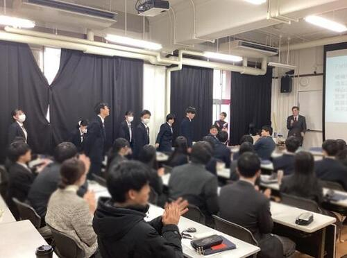
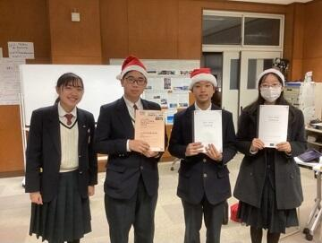
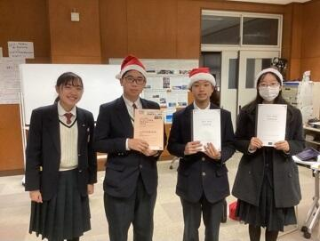

SAGANO BLOG
- >
- SAGANO BLOG
- >
- 部活動
2025年02月12日
２月11日、本校ESS部の部員７名が、京都府立鳥羽高等学校で開催された令和６年度 京都府パーラメンタリーディベート（即興型英語ディベート）交流大会に参加しました。

開会の挨拶の後、招待ジャッジの先生のお一人から、ディベートが上達するためのミニレクチャーがありました。その後、ルール確認を行い、２試合の交流戦をしました。

ペット販売の是非や16歳未満のSNS使用の是非など、身近な論題でディベートを行いました。他校の生徒とのディベート交流を真剣に楽しみつつ、いつもと違うジャッジの先生からのフィードバックも大きな学びになったようでした。
嵯峨野高校ESS部、今後も英語ディベートに精力的に取り組んで参ります。
2025年01月31日
シンギュラリティバトルクエスト2024の決勝戦が１月18日・19日に開催され、嵯峨野高校コンピュータ部の1年生からなるチーム「文系人狼」がXクエストで全国１位を、チーム「Mr.4K」がサイバークエストで全国４位をそれぞれ獲得しました。
シンギュラリティバトルクエストとは、高校生がAI/ICTのスキルを競う大会で、文部科学省などが後援しています。従来の５競技(AIクエスト、サイバークエスト、データクエスト、ロボクエスト、Xクエスト)に加え、今年はXクエスト02などの競技が追加されました。
今回のXクエスト決勝戦の課題は、七並べAIの作成でした。囲碁のように相手の状態が全て見えるゲームでは、既にアルファ碁のようなAIがプロ棋士に匹敵する性能を発揮していますが、相手の状態について不完全な情報しか得られない七並べのようなゲームでは、まだまだAIを研究する余地があります。
Xクエストの試合では、各チームの作成したAIが6000回対戦を繰り返し勝率を競いました。嵯峨野高校のチームは、接戦を制して見事全国１位を獲得しました。

サイバークエストは、情報セキュリティに関するクイズ形式の問題を、セキュリティの知識やソフトを駆使して、隠された言葉(Flag)を見つけるCTF形式の競技です。嵯峨野高校のチームはリベンジャーズ枠から出場し、２日にわたる戦いの結果見事全国４位を獲得しました。


応援ありがとうございました！
2025年01月29日
一年間お世話になった地元企業「和衣庵」様のお二人に、着付けを教えていただきながら、デザイン工芸部の部長が自分で作った浴衣を試着しました。「和衣庵」様には、教員の力だけでは及ばない、生徒の好奇心を温かく支えていただき、心より感謝いたします。

冷たい雨の夕方、すがる思いで部長が御社を訪れたのは昨年の２月。それから、灼熱の夏も、切羽詰まった秋も、何度もご指導いただきました。おかげさまで和服に関して何の知識もなかった高校生が、こんなにも素敵な浴衣を作り上げることができました。
「応援」は「挑戦」のあるところに生まれると言います。地域の皆様、様々なことに好奇心を持って挑戦する嵯峨野高校の生徒を、これからもどうぞよろしくお願いいたします。 後を引き継ぐ後輩と記念撮影。部長はもうすぐ引退です。
後を引き継ぐ後輩と記念撮影。部長はもうすぐ引退です。
和衣庵様からいただいた「応援」は、浴衣の制作だけでなく、高校時代に何かを成し遂げた経験となって、部長の未来を支えてくれると思います。本当にありがとうございました。
2025年01月16日
先日行われました令和６年度京都府高等学校剣道選手権大会（全国選抜兼近畿 選抜京都府予選会）において上記の成績を収めました。また、この結果により令和７年度インターハイ京都府予選会でのシード権を獲得しました。
今回の試合は、昨年11月の新人大会で京都府第５位だったことによるシード権があり、１回戦を勝ちあがってきた相手との戦いでしたが、危なげなく勝ちました。最終的には、準々決勝で準優勝した久御山との対戦になりました。惜しい技を繰り出す場面もあり接戦を演じましたが、残念ながら敗戦となりました。
11月の新人大会時に比べ各自着実にレベルアップしていました。今回のことを自信にしつつ、次に向けて課題を１つずつ克服していき、男子とともにインターハイ予選でも活躍してくれることと思います。
引き続き応援よろしくお願いします。
2024年12月27日
12月24日、25日の２日間に渡って開催された第10回PDA高校生即興型英語ディベート全国大会2024（主催：一般社団法人パーラメンタリーディベート人財育成協会）に、本校ESS部の代表として２年生２名と１年生１名がオンラインで参加しました。今年は日本全国から87校が出場し、本校は９年連続出場しています。
「日本の大学入試では、一般入試よりもAO入試を増やすべきか」「日本政府は16歳未満のSNS使用を禁止すべきか」といった高校生にもなじみ深いものから、「日本は、国際問題よりも、国内問題の解決を優先すべきか」「国連は、自律型致死兵器システム（LAWS）の開発と使用を全面的に禁止すべきか」といった最新の時事問題まで、多様な論題に取り組みました。

結果は予選ラウンド４戦中２勝でした。ディベートだけでなく、論題に関する専門家（キーノートスピーカー）によるレクチャーや、強豪校による決勝トーナメント戦の見学を通じて、多くのことを学んだ二日間となりました。
 

来年も本校ESS部では英語ディベートに取り組み、さらなる実践的英語力の向上を目指します。
2024年12月24日
12月21日、22日の２日間、岡山大学にて開催された全国高校生英語ディベート大会（主催：一般社団法人 全国高校英語ディベート連盟 （HEnDA））に、本校ESS部の２年生６名が京都府代表として出場しました。


今回の大会は準備型ディベートのため、「日本政府は、原子力発電所を全て廃止すべきである。是か非か。」という今年度の論題に対して、賛成と反対両方の立場から、およそ10ヶ月の間取り組んできました。国内外の論文や記事など様々なデータを収集し、出場選手のみならず２年生部員一丸となって何度も議論を重ね、この難題に取り組んできました。


準備型ディベートでは本校として２年連続の全国大会出場でした。全国から予選を勝ち抜いてきた強豪校を相手に、多くのことを学び、大いに意義のある大会となりました。
2024年12月16日
12月15日(日)、狂言部の定期公演「嵯峨野高校狂言の会」を開催しました。嵯峨野高校の狂言の取組は2009年に始まり、2011年から独自に公演を開くようになりましたので、今年が14回目になります。冬青庵能舞台では11回目。舞台と客席が近く、お客様の暖かい反応が伝わってくる、高校生にはありがたい会場です。
(1)「萩大名(はぎだいみょう)」
大名が萩の花見に行くと、庭の亭主が和歌を所望するというので大慌て。太郎冠者に助けを求めますが......。

地方から京へ上ってきた大名は、無風流ではあるものの、どこかおおらかな人柄です。そうしたキャラクターをよく表現できていました。庭の亭主も、意地悪で大名を責めるのではなく、純粋に和歌が好きで最後の7文字を聞きたいという心情が伝わってきました。どちらも役者本人の持ち味なのかもしれません。
(2)「舎弟(しゃてい)」
兄が自分を「舎弟」と呼ぶのを不審に思った弟が、その意味を人に尋ねます。いたずら心を起こした物知りが「舎弟とは盗人のこと」と教えると......。

もともとは「怜悧な兄が素朴な弟にやりこめられる」という筋書きの曲ですが、ここでも役者の持ち味が出て「おっとりした兄が直情な弟に振り回される」様子になり、ちょっと新鮮な感じが出たように思います。
どちらの曲でも、要所々々で客席から笑い声が上がり、休憩時間には「わかりやすかったね」という声も聞こえて、狂言の楽しさ面白さを伝えることができたのではないかと嬉しく思っています。これも、茂山千五郎先生はじめ茂山狂言会の先生方が懇切に御指導くださった賜物です。あらためて心から感謝を申し上げます。
休憩をはさんで、茂山千五郎先生と茂山虎真先生・茂山竜正先生が「太刀奪(たちうばい)」を演じてくださいました。声の響きや笑いの迫力は高校生の演技とは比べものにならず、太郎冠者が震え上がったり、転ばされたりする様子に客席が大いに沸き、伝統の芸の素晴らしさを堪能させていただきました。
狂言部の卒業生が何人も来てくれて、大学で勉学のかたわら、狂言や能楽、演劇などに打ち込んでいる近況を伝えてくれました。こうした良い伝統が続いていくよう、これからも励みたいと思います。
2024年12月13日
今年度の芸術文化展の取り組みは、嵯峨野高校の教育テーマ「ほんまもんの学び」です。本日のお昼休みには、本校音楽教員（ピアノ）とプロのフルート奏者であられる松村裕絵 氏による「ほんまもんコンサートVol.1」が開催されました！

先生もいつもと違うプロの表情を見せます。


会場は140名を超える満員御礼。

嵯峨野生に少し早いクリスマスプレゼント。夢のようなひと時をいただきました！
また、夕方にはダンス同好会のみなさんの発表！「かわいい〜」の声が飛ぶ中、見事に踊り切りました！


その他にも芸術文化展では、伝統工芸作家・竿頭斎 氏の竹工芸作品と華道部・工芸部のコラボレーション展示などもご覧いただけます！


今年度の展示は「ほんまもんの学び」を提供する仕掛けがいっぱいです。
お土産用の嵯峨野プラ板も大好評！

12/14(土)15時まで！保護者等の皆様、ご家族でぜひご来場ください。
2024年12月13日

芸術文化展では能楽研究者・天野文雄先生のご講演の後、狂言部が狂言「舎弟」を披露しました。


部員さんに、なぜ狂言部に入ったのか尋ねると「昔から狂言が好きで、狂言部があるから嵯峨野に来た」とのこと。生徒たちのよく響く声、堂々とした立ち振る舞いに天野先生も舌を巻いておられました。
 展示では地元企業「和衣庵」さんにご指導いただき、完成した浴衣が華やかに飾られています。その他、嵯峨野生の集中力を示すような家庭科の刺し子刺繍作品や、嵯峨野生が世界をどのように見つめているのか感じさせる写真部さんの展示も魅力です。
展示では地元企業「和衣庵」さんにご指導いただき、完成した浴衣が華やかに飾られています。その他、嵯峨野生の集中力を示すような家庭科の刺し子刺繍作品や、嵯峨野生が世界をどのように見つめているのか感じさせる写真部さんの展示も魅力です。


そして、今回初の取り組み、芸術文化展期間限定YouTubeです。これには生徒も興味深々。芸術文化展期間終了後は安全のため、チャンネルごと削除する予定です。もし、お気に入りの作品があれば、早めに「いいね」をよろしくお願いいたします！
2024年12月11日
芸術文化展の様子をお伝えします！
お昼の体育館ではバトン部の発表がありました。嵯峨野の妖精たちがサンタに扮してクリスマスソングでダンスを披露すると、黄色い声援で「かわいい〜」と大盛り上がりする前列女子とは対照的に、緊張したのか少し離れた所から、きちんと正座で見ている男子の姿が印象的でした。


さて、コモンホール受付横には美術部・工芸部の作品が並びます。京都府代表として近畿や全国、京都府庁展示などの選出された力作揃いです。

その横には染色選択者の作品が色彩のシャワーのように降り注ぎます、

もはや校内での認知度が鰻登りの埴輪の「美須子」がペットの「まろちゃん」を連れて今年も皆様にご挨拶。陶芸教員の作品のなんとも可愛い猫たちと、100%嵯峨野産の校有林の粘土で作ったカードスタンド（お土産です！）もお出迎えします。


芸術選択者の陶芸・染色・美術の作品に加えて、
12月14日（土）には以下の発表が予定されています。
【ダンス同好会10:00~10:30 コモンホール】【軽音楽部10:00~12:30 音楽室】
【吹奏楽部11:00~11:30 コモンホール】【演劇部13:30~13:45 コモンホール】
保護者等の皆様もぜひご来校ください！
2024年11月25日
放送部は、11月24日に福井市で行われた第44回近畿高等学校総合文化祭福井大会放送部門の朗読部門に２年生女子１名が参加しました。
福井駅では多くの恐竜のモニュメントの出迎えを受け、徒歩すぐの会場に向かいました。


放送部は全国大会に比べると近畿総文への出場は少なく、近畿総文に読みの部門で出場するのは、コロナ禍のためweb開催だった奈良大会以来4年振りで、会場で実際に読むのは鳥取大会以来9年振りとなります。
残念ながら入賞はなりませんでしたが、他県の生徒の読みも聞くことが出来ましたので、次の大会へ向けてまた頑張って参ります。
2024年11月19日
去る11月4日に花園駅前で行われた、右京警察署のミュージックパトロールに参加させて頂いたことにつきまして、右京警察署より感謝状を頂くこととなりました。
本校コモンホールに右京警察署のパネルを設置し、校長先生、吹奏楽部、バトントワリング部、放送部に感謝状が授与されました。
その後記念撮影が行われ、最後には見学に来ていた各部の部員も含めて全員で記念写真を撮りました。
また今後も地域に根ざした活動に参加して参りたいと存じますので、よろしくお願い致します。


2024年11月18日
11月16日（土）第44回近畿高等学校総合文化祭に選出された美術部が開催地である福井県に行ってきました！
会場では京都府代表として選出された美術部２名の作品が飾られています。


嵯峨野高校の美術部は、来年度の全国総合文化祭・近畿総合文化祭・京都府庁展示にも、京都府代表として選出されています。
福井県の駅前はジュラシックパーク（動いて鳴きます。）！
恐竜王国の後押しを受けて、生徒たちの活躍が益々期待される展覧会でした。


2024年11月07日
嵯峨野高校狂言部では、来る12月15日(日)に、今年の「嵯峨野高校狂言の会」を開催します。
日時：令和6年12月15日(日) 午後2時開演(1時30分開場)
会場：冬青庵能舞台(京都市中京区両替町通夷川下ル、地下鉄「丸太町」「烏丸御池」駅から徒歩5分)
曲目：『舎弟(しゃてい)』、『萩大名(はぎだいみょう)』(以上嵯峨野高校生)、『太刀奪(たちうばい)』(茂山千五郎先生、茂山虎真先生、茂山竜正先生)
入場無料
＜申込方法＞
嵯峨野高校生･御家族は、配布した参加申込書をホームルーム担任へお渡しください。
学校外の方は、メールアドレス [email protected] へ、次の要領でお申し込みください。
・メールの題名は「狂言の会申込み」としてください。
・メールの本文には、次の内容を記載してください。個人情報は十分注意して管理いたします。
(1) 参加を希望される人数
(2) 各自のお名前
(3) 返信先のメールアドレス
定員(60名)まで先着順により、整理券をお渡しします。メールで申し込まれた方には、メールで整理番号を返信します。当日は、全席自由です。
なお、当日、発熱や風邪症状がある場合は、恐れ入りますが入場を御遠慮ください。
現在、茂山千五郎先生の指導のもと、部員3人が張り切って稽古中です。ぜひ御来場ください。
記事上の写真は、昨年の公演のものです。
2024年11月04日
11月3日に行われた、京都府高等学校総合文化祭放送部門の結果です。◎は全国総文香川大会出場、○は近畿総文鳥取大会出場です。
・朗読：2年生女子第3位◎、2年生女子第5位
・朗読新人戦：1年生女子第1位○
・アナウンス新人戦：1年生女子第1位○、1年生女子第5位
・ビデオメッセージ：2年生制作作品第1位◎
・オーディオメッセージ：1年生制作作品第2位
また、上位大会出場はなりませんでしたが、アナウンスで2年生男子1名、朗読新人戦で1年生男子1名、アナウンス新人戦で1年生男子2名が決勝進出を果たしています。
今回の大会では、番組作成・アナウンス原稿作成に於いて、非常に多くの皆様にお世話になりました。改めてお礼申し上げます。本当に有り難うございました。
今後とも放送部へのご声援をよろしくお願い致します。
2024年10月25日
10月20日（日）に京都市立太秦小学校で実施された第29回太秦福祉ふれあい祭りにバトントワリング部が参加し、パフォーマンスを行いました。観客の方々にも楽しんでいただき、地域の方々との良い交流の機会となりました。より良いパフォーマンスができるよう、これからも練習に励んでいきます。
2024年10月21日
朝晩が涼しくなり、秋らしい気候になってきました。
夏が終わって、ようやく浴衣の完成が見えてきました。
ご心配なく。この浴衣は来年の夏に向けて作っていたのです（...たぶん）。
この活動を通じて、今年度の嵯峨野の教育テーマである「ほんまもん」の学びを、地元企業の和衣庵さまに、ご指導・ご支援いただきました。「ほんまもん」の皆さまから直接、日本の伝統文化である着物についてお教えいただいたことは、デザイン工芸部のみならず嵯峨野高校の芸術教育にとって、たいへん大きな収穫でした。ありがとうございました。

{kind=link}
{kind=link}
{kind=link}
{kind=link}
{kind=link}
{kind=link}
{kind=link}
{kind=link}
{kind=link}
{kind=link}
{kind=link}
{kind=link}
{kind=link}
{kind=link}
{kind=link}
{kind=link}
{kind=link}
{kind=link}
{kind=link}
{kind=link}
{kind=link}
{kind=link}
{kind=link}
{kind=link}
{kind=link}
{kind=link}
{kind=link}
{kind=link}
{kind=link}
{kind=link}
この浴衣は、今週末の京都府総合文化祭にて展示されます。
嵯峨野高校の美術部・デザイン工芸部をはじめ、京都府の高校生の力作が勢揃いします！
是非実物の作品をご覧ください！
【第41回京都府高等学校総合文化祭 美術・工芸部門】
日時：10月26日(土)9:00~17:00／27日(日)9:00~15:00
場所：みやこめっせ 日図デザイン博物館 地下1階
※入場無料
{kind=link}
{kind=link}
{kind=link}
{kind=link}
{kind=link}
{kind=link}
〒616-8226
京都市右京区常盤段ノ上町15番地
TEL 075-871-0723 FAX 075-871-0724
E-mail [email protected]
Copyright (C) 京都府立嵯峨野高等学校 All Rights Reserved.